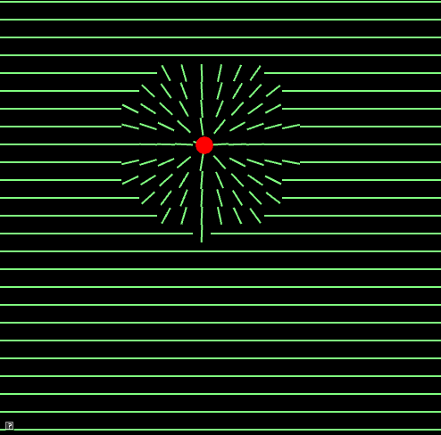

The goals of this lab are to
After completing this assignment, all teapots from lab 4 should spin in unison!
This assignment has been added to your AnimationToolkit repository.
> cd cs56 > cd AnimationToolkit > cd build > cmake .. > make > ../bin/a5-testQuat
You should now have a new directory under assignments called a5-quats.
In this assignment, you will implement conversions between quaternions,
matrices, and angle/axis representations for rotation. To help test your
conversions, re-use the teapot demo from assignment
4.
In this question, we will use rotations around the Z axis to create a ripple effect. This question is split into steps Part 1: Draw a NxN grid of cuboids (2 points)
Re-purpose your code from assignment 2 to draw a grid of cuboids. Unlike in
assignment 2 (gradient), these cuboids should be longer than they are wide to
create stripes across the screen. (Hint: to change the width of the cuboid,
use the last parameter to ADrawCube to adjust the dimensions)
Part 2: Use atan2 to rotate cuboids towards the target (3 points)
Re-purpose your code from assignment 1 (look) to use atan2 to compute
an angle that points from the cuboid's position to the target. The calculation
will give you an angle which you can use to rotate the cuboid towards the
target. (Hint: the axis of rotation is the Z axis. Use euler angles to create
an AMatrix3 to pass to ADrawCube).
Next, modify your code so that only cuboids within 100 units of the target
are pointed towards it.

Part 3: Interpolate cuboids smoothly back to their original orientations (10 points)
To accomplish this effect, you will need to store the Z angle for each cuboid. If the cuboid's position is further than 100 units away from the target, you should blend its current angle with zero. In our interpolations for assignment 2, we kept track of the start and end values so we could vary the quantity based on
angle = start * (1-t) + end * t
For this animation, we will perform an exponential blend back to zero. This is simpler to implement than a linear blend merely need decrease the currentAngle back to zero each frame, e.g.
angle = currentAngle * pow(rate, dt())
For example, if rate = 0.1, we will decrease currentAngle by pow(0.1, dt()) each frame. This will quickly reduce the angle towards zero.
To finish up the animation, use the flag _buttonDown so that the cuboids do not
point towards the target unless the user is pressing the left mouse button (e.g.
when _buttonDown = true, the user is pressing the left mouse button).
In this question, you will implement conversions between quaternions and angle-axis representations for rotation.
Recall that the relationship between quaternions and an angle/axis rotation is \( q = \left[\sin(\frac{\theta}{2}) \hat{u}, \cos(\frac{\theta}{2})\right] \)
To run the unit tests from the build directory, type
build> ../bin/a5-testQuat
// accessing member variables in AQuaternion works similarly to AMatrix3 mX = 0.5; mY = 0.0; mZ = 3.0; mW = -5.0; normalize(); // make myself a unit quaternion AQuaternion q; // create an identity quat q[0] = 0.1; // x value q[1] = 0.1; // y value q[2] = 0.1; // z value q[3] = 0.1; // w value q.normalize(); // make q a unit quaternion
In class, we derived the rotation matrix corresponding to a quaternion \( q = (x, y, z, w) = (\bar{v}), w \). \[ \left( \begin{array}{ccc} 1-2(y^2+z^2) & 2(x y - w z) & 2(x z + w y) \\ 2(x y + w z) & 1-2(x^2+z^2) & 2(y z - w x) \\ 2(x z - w y) & 2(y z + w x) & 1-2(y^2+x^2) \\ \end{array} \right) \]
To run the unit tests from the build directory, type
build> ../bin/a5-testQuatMat
To check the teapot demo from the build directory, type
build> ../bin/a4-teapots
Using the expressions above, we can extract a quaternion from a rotation matrix, similarly to how we extract euler angles from a matrix. A numerically stable approach is to
//solve for w^2, x^2, y^2, and z^2 //Find the term with the largest value //Based on the largest component, compute the remaining terms using the off-diagonal matrix elements.
For example, if \( w^2 \) is the largest, we would then solve for x, y, and z using the expressions for \( w x \), \( w y \), and \( w z \).
To run the unit tests from the build directory, type
build> ../bin/a5-testQuatMat
To check the teapot demo from the build directory, type
build> ../bin/a4-teapots
Option 1 (up to 2) Now that your framework supports rotations around any axis, try to make an interesting demo based on that.
Option 2 (up to 15) Implement a direct angle/axis to matrix conversions. Lengyel 4.3.1 can be used as a reference. For full credit, answer the following questions: